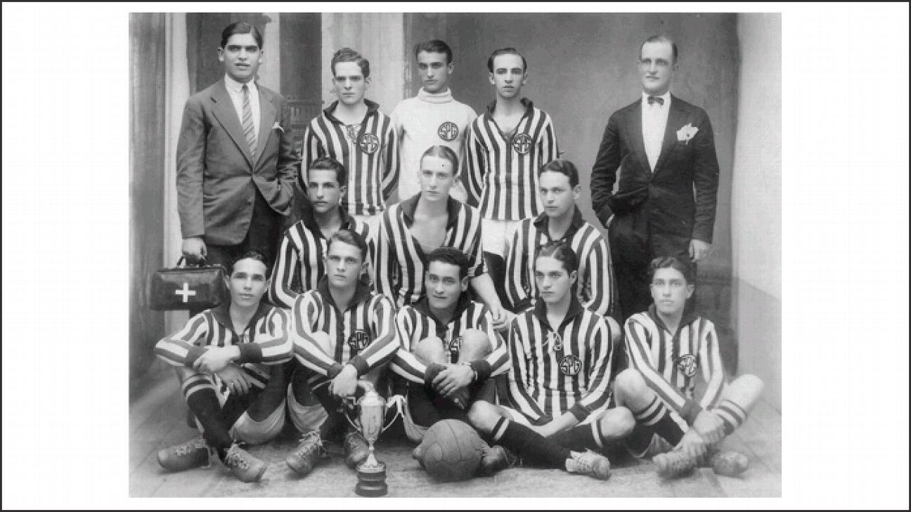

The Beginnings

Football arrived in Brazil at the end of the 19th century and gradually became part of everyday life in its communities.
Over time, the sport became more than just a physical activity and developed into an important expression of Brazilian cultural identity.